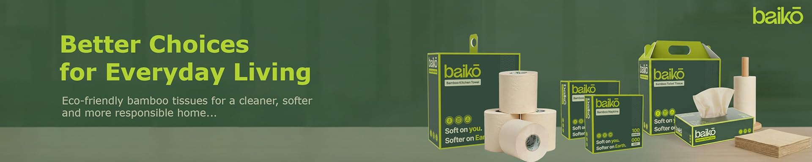

Premium bamboo tissues that are sustainable, biodegradable and better for the planet.
Shop Now
No trees harmed
Safe for skin
Biodegradable
Premium quality tissue
Traditional paper products destroy millions of trees every year. Bamboo grows faster, uses less water and produces stronger fibers.
Baiko is on a mission to replace tree based paper products with sustainable bamboo alternatives.
"Best eco friendly tissues I have used."
"Soft and strong. Love the bamboo idea."
"Finally a sustainable alternative."
Bamboo grows faster and requires less water than trees.
Yes. Our tissues decompose naturally.
You can buy them directly from Amazon and other marketplaces.
Join us in building India's next eco friendly FMCG brand.
Apply Now